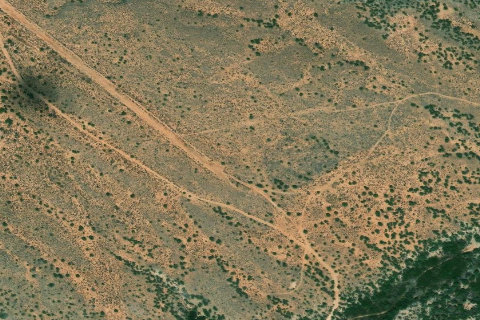

Gold Creek / Shootering
GOLDCREEK · UT

Aerial imagery source: Esri, Vantor, Earthstar Geographics, and the GIS User Community
| Identifier | GOLDCREEK |
|---|---|
| State | UT |
| Runway length | 3,440 ft |
| Runway width | 40 ft |
| Surface | Dirt |
| Runway | 12/30 |
| Elevation | 5,880 ft |
| Ownership | blm |
| CTAF | 122.9 |
| Coordinates | 37.8717, -110.6199 |
Notes
[ubcp] Description : A high altitude get away for the hotter days, Gold Creek overlooks Glen Canyon, Canyonlands, and the Lake Powell area. This is a spectacular camping spot nearly at the base of Mt. Hillers known for its abundant wildlife and gold deposits. This airstrip allows access to the Wilderness Study Area that encompasses most of the mountain area. The location of this strip is subject to significant winds created from the venturi effect of Mt. Hiller and the smaller Mt Holmes just to the south. Also, the upsloping and down sloping winds between day and night here are nearly textbook in nature. It would be wise during your initial landing survey to keep a comfortable pattern altitude to determine if any adverse wind phenomena might be present. Runway : The runway has a major washout near the top third, easily spotted where the road crosses the airstrip. There’s adequate distance before the washout for most type aircraft, after the washout has about 850ft of usable runway. Passage through the washout to the camping area is possible with most bush type aircraft however it would be better to land above the wash if your aircraft type allows. If not, a mostly flat area on the south end of the strip would also make for excellent camping. The usable portions of the runway are in great condition and mostly rock/gravel in nature. The airstrip slopes uphill about 4% (guess) toward the north, landing downhill will require a significant amount of wind to overcome the slope of the runway. Be cognizant of the winds. A late go around with a large tailwind component may result in the inability to outclimb the rising terrain. Parking : A large parking area to the north can accommodate multiple aircraft. Two fire circles and a mostly flat camping surface can be found here too. Good cell phone coverage is also available. Approach Considerations : The tendency to become low on final may be a threat as the upslope of the runway can create that visual illusion. Again, be careful with adverse winds and late go arounds.